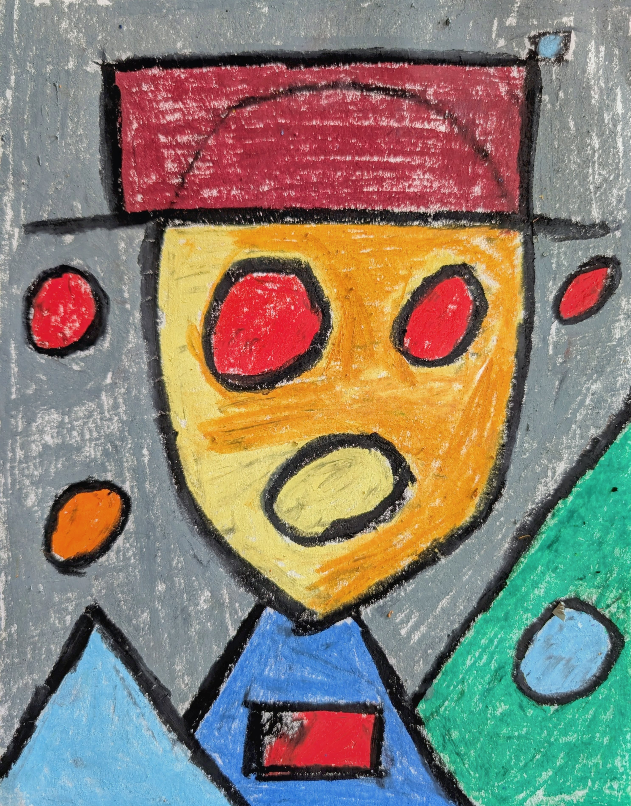

Arrival
This work opens the Faces series. It establishes the visual stance of the sequence and sets its emotional register.
The face is reduced to a signal rather than a portrait. Geometry replaces expression. Color carries the weight.
The composition feels frontal and unavoidable. The eyes do not look back. They occupy space.
Gesture is exposed. Texture remains visible. Nothing is softened for comfort.
This is a defining piece within the series. It anchors the variations that follow.
Inquire to purchase